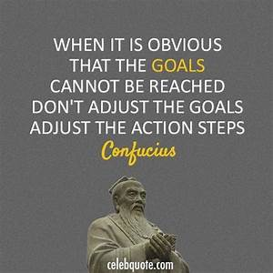

Confucius (or Kongzi) was a Chinese philosopher who lived in the 6th century BCE and whose thoughts, expressed in the philosophy of Confucianism, have influenced Chinese culture right up to the present day. Confucius has become a larger than life figure and it is difficult to separate the reality from the myth. He is considered the first teacher and his teachings are usually expressed in short phrases which are open to various interpretations. Chief among his philosophical ideas is the importance of a virtuous life, filial piety and ancestor worship. Also emphasised is the necessity for benevolent and frugal rulers, the importance of inner moral harmony and its direct connection with harmony in the physical world and that rulers and teachers are important role models for wider society.
Confucius is believed to have lived from c. 551 to c. 479 BCE in the state of Lu (now Shandong or Shantung). However, the earliest written record of him dates from some four hundred years after his death in the Historical Records of Sima Qian (or Si-ma Ts‘ien). Raised in the city of Qufu (or K‘u-fou), Confucius worked for the Prince of Lu in various capacities, notably as the Director of Public Works in 503 BCE and then the Director of the Justice Department in 501 BCE. Later, he travelled widely in China and met with several minor adventures including imprisonment for five days due to a case of mistaken identity. Confucius met the incident with typical restraint and was said to have calmly played his stringed instrument until the error was discovered. Eventually, Confucius returned to his hometown where he established his own school in order to provide students with the teachings of the ancients. Confucius did not consider himself a ‘creator’ but rather a ‘transmitter’ of these ancient moral traditions. Confucius’ school was also open to all classes, rich and poor.
It was whilst he was teaching in his school that Confucius started to write. Two collections of poetry were the Book of Odes (Shijing or Shi king) and the Book of Documents (Shujing or Shu king). The Spring and Autumn Annals (Lin Jing or Lin King), which told the history of Lu, and the Book of Changes ( Yi Jing or Yi king) was a collection of treatises on divination. Unfortunately for posterity, none of these works outlined Confucius’ philosophy. Confucianism, therefore, had to be created from second-hand accounts and the most reliable documentation of the ideas of Confucius is considered to be the Analects although even here there is no absolute evidence that the sayings and short stories were actually said by him and often the lack of context and clarity leave many of his teachings open to individual interpretation. The other three major sources of Confucian thought are Mencius, Great Learning and Mean. With Analects, these works constitute the Four Books of Confucianism otherwise referred to as the Confucian Classics. Through these texts, Confucianism became the official state religion of China from the second century BCE.
